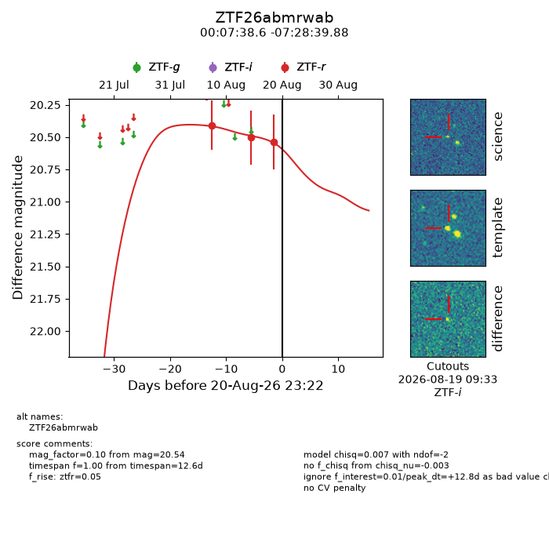
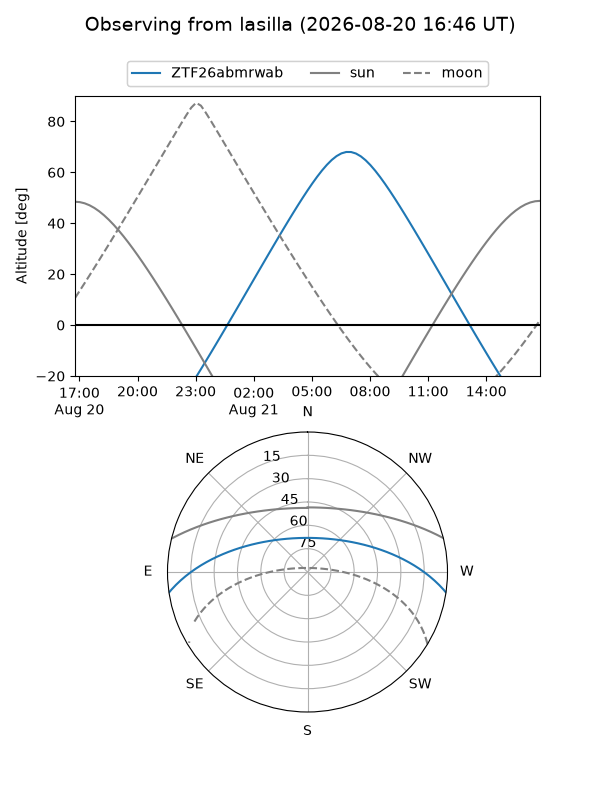
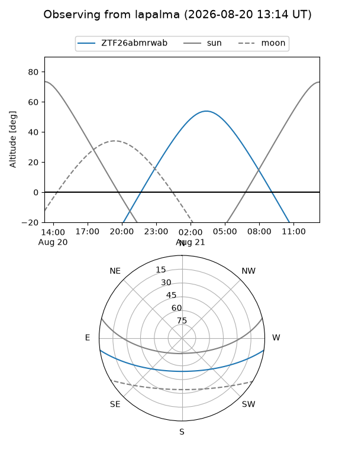
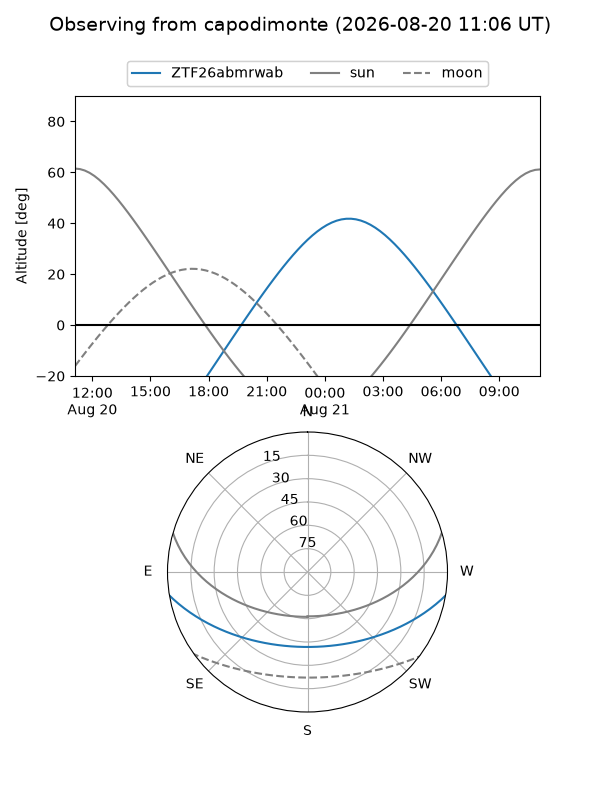
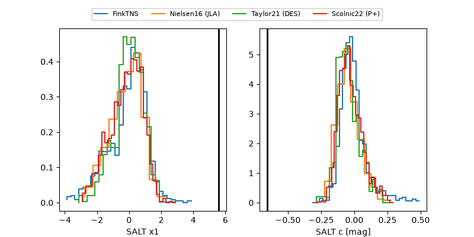

ZTF26abmrwab
Target ZTF26abmrwab at 2026-08-21 11:17
Aliases and brokers:
FINK-ZTF: ztf.fink-portal.org/ZTF26abmrwab
Lasair-ZTF: lasair-ztf.lsst.ac.uk/objects/ZTF26abmrwab
ALeRCE-ZTF: alerce.online/object/ZTF26abmrwab
Direct TNS query: direct search
alt names
ZTF26abmrwab (ztf,fink_ztf)
Coordinates:
equatorial (ra, dec) = 1.9106,-7.47774
equatorial (HMS+DMS) = 00:07:38.55,-07:28:39.88
galactic (l, b) = (93.0741,-67.77398)
Flags:
peak dt: +13.3
Photometry:
last ztfr=20.54
3 ztfr detections
Lightcurve

Visibility



Additional plots
